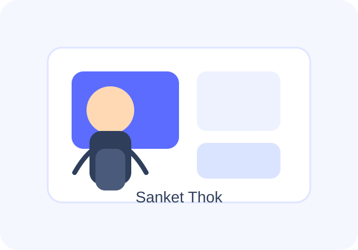

Results-driven Software Engineer with over 2 years of experience in backend development, API integration, and observability. I work with Java, Spring Boot, AWS, Azure DevOps, and Grafana to build scalable, reliable solutions that support business and technical goals.
I build backend services and application logic using Java and Spring Boot, with a focus on maintainability, scalability, and clean architecture.
I work on connecting systems through APIs and improving monitoring with tools such as Grafana to support better visibility and faster issue resolution.
I am particularly interested in cloud technologies and enjoy working with AWS, Azure DevOps, Git, and related tools to streamline delivery and deployment workflows.